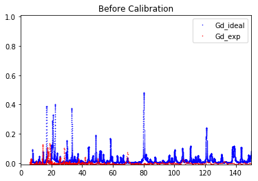
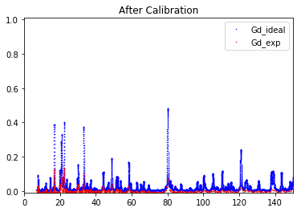
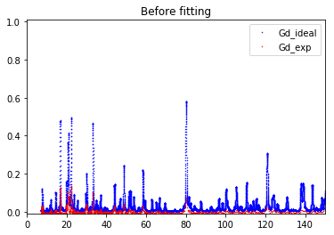
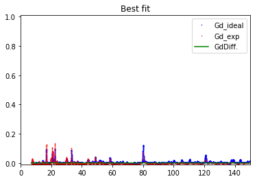

Tutorial¶
Getting started¶
Import library and packages¶
In [1]:
import os
import sys
root_folder = os.path.dirname(os.getcwd())
sys.path.append(root_folder)
import ResoFit
from ResoFit.calibration import Calibration
from ResoFit.fitresonance import FitResonance
import numpy as np
Global paramters¶
- min energy of 7 eV (has to be greater than 1 x 10-5 eV)
- max energy of 150 eV (has to be less than 3000 eV)
- energy steps to interpolate database: 0.1 eV
In [2]:
energy_min = 7
energy_max = 150
energy_step = 0.01
File locations for calibriation and resonance fitting¶
- */data (directory to locate the file)
- data_file (YOUR_DATA_FILE.txt or .csv)
- spectra_file (YOUR_SPECTRA_FILE.txt or .csv)
In [3]:
folder = 'data'
data_file = 'all_thick_div.txt'
spectra_file = 'Image002_Spectra.txt'
Sample info¶
- Gd foil
- thickness neutron path within the sample in (mm)
- density sample density in (g/cm3), if omitted, pure solid density will be used in fitting
- repeat : reptition number if the data is summed of multiple runs (default: 1)
In [4]:
layer_1 = 'Gd'
thickness_1 = 0.15 # mm
density_1 = np.NaN # g/cm^3 (if omitted, pure solid density will be used in fitting step)
repeat = 1
Calibration¶
Estimated intrumental parameters¶
- input estimated source to detector distance (m)
- input estimated possible time offset in spectra file (us)
In [5]:
source_to_detector_m = 16.
offset_us = 0
Class initialization¶
- Pass all the parameters definded above into the Calibration()
In [6]:
calibration = Calibration(data_file=data_file,
spectra_file=spectra_file,
layer_1=layer_1,
thickness_1=thickness_1,
density_1=np.NaN,
energy_min=energy_min,
energy_max=energy_max,
energy_step=energy_step,
repeat=repeat,
folder=folder)
Equations for (time-wavelength-energy) conversion¶
\[E = \frac {81.787 }{ \lambda^2 }\]
\(E\) : energy in (meV),
\(\lambda\) : wavelength in (Å).
\[\lambda = 0.3956\frac{t_{record} + t_{offset}}{L}\]
\(t_{record}\) : recorded time in (µs),
\(t_{offset}\) : recorded time offset in (µs),
\(L\) : source to detector distance in (cm).
Calibrate instrumental parameters¶
- using source_to_detector_m or offset_us or both to minimize the difference between the measured resonance signals and the simulated resonance signals from ImagingReso within the range specified in global parameters
- vary can be one of [‘source_to_detector’, ‘offset’, ‘all’] (default is ‘all’)
- fitting parameters are displayed
In [7]:
calibration.calibrate(source_to_detector_m=source_to_detector_m,
offset_us=offset_us,
vary='all')
Name Value Min Max Stderr Vary Expr Brute_Step
offset_us 2.695 -inf inf 0.04659 True None None
source_to_detector_m 16.44 -inf inf 0.004409 True None None
Out[7]:
<lmfit.minimizer.MinimizerResult at 0x1142f9e80>
Retrieve calibrated parameters¶
In [8]:
calibration.calibrated_offset_us
Out[8]:
2.6951060207167301
In [9]:
calibration.calibrated_source_to_detector_m
Out[9]:
16.442106977781563
Plot calibration result¶
- using the best fitted source_to_detector_m and offset_us to show the calibrated resonance signals from measured data and the expected resonance positions from ImagingReso
- measured data before and after is ploted with raw data points instead of interpolated data points. However, the interpolated data was used during the calibration step above.
In [10]:
calibration.plot_before()
calibration.plot_after()


Fit resonances¶
Class initialization¶
- Pass all the parameters definded and calibrated into the FitResonance()
In [11]:
fit = FitResonance(spectra_file=spectra_file,
data_file=data_file,
layer=layer_1,
repeat=repeat,
energy_min=energy_min,
energy_max=energy_max,
energy_step=energy_step,
calibrated_offset_us=calibration.calibrated_offset_us,
calibrated_source_to_detector_m=calibration.calibrated_source_to_detector_m)
Fitting equations¶
Beer-Lambert Law:¶
\[T\left( E \right) =\frac { I\left( E \right) }{ { I }_{ 0 }\left( E \right) } =exp\left[ -\sum\nolimits_i { { N }_{ i }{ d }_{ i } } \sum\nolimits_j { { \sigma }_{ ij }\left( E \right) { A }_{ ij } } \right]\]
\({ N }_{ i }\) : number of atoms per unit volume of element \(i\),
\({ d }_{ i }\) : effective thickness along the neutron path of element \(i\),
\({ \sigma }_{ ij }\left( E \right)\) : energy-dependent neutron total cross-section for the isotope \(j\) of element \(i\),
\({ A }_{ ij }\) : abundance for the isotope \(j\) of element \(i\).
\[{N_i} = {N_A}{C_i} = \frac { {N_A}{\rho_i}} {\sum\nolimits_j {m_{ij}{A_{ij}}}}\]
\({N_A}\) : Avogadro’s number,
\({C_i}\) : molar concentration of element \(i\),
\({\rho_i}\) : density of the element \(i\),
\(m_{ij}\) : atomic mass values for the isotope \(j\) of element \(i\).
How to fit the resonance signals¶
- using thickness (mm) or density (g/cm3) to minimize the difference between the measured resonance signals and the simulated resonance signals from ImagingReso within the range specified in global parameters
- vary can be one of [‘thickness’, ‘density’] (default is ‘density’)
- fitting parameters are displayed
In [12]:
fit.fit(thickness=thickness_1, density=density_1, vary='density')
Name Value Min Max Stderr Vary Expr Brute_Step
density 1.567 0 inf 0.004456 True None None
thickness 0.15 0 inf 0 False None None
Out[12]:
<lmfit.minimizer.MinimizerResult at 0x108369c88>
Output fitted result in molar concentration¶
- unit: mol/cm3
In [13]:
fit.molar_conc(layer_1)
Molar conc. of element Gd in layer Gd is: 0.009962583893737246 (mol/cm3)
Out[13]:
0.0099625838937372462
Plot fitting result¶
- using the best fitted density to show the measured resonance signals and the fitted resonance signals from ImagingReso
- measured data before and after is ploted with raw data points instead of interpolated data points. However, the interpolated data was used during the fitting step above.
In [14]:
fit.plot_before()
fit.plot_after()

